Whatever guests notice first when they walk into the dining room, the table setting sets the mood before anyone even sits down.
It does not take expensive china to pull off, it takes cohesion and a little confidence in the choices actually made.
A stunning Easter table comes down to three things: real color harmony instead of just defaulting to pastel, texture layered in to keep the table from looking flat, and a clear focal point that anchors the whole design.
Skip any one of those and the table starts to feel unfinished, no matter how much decor gets piled on.

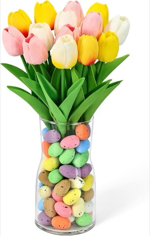
Spring Easter Decorations, 12 Artificial Tulips with Colorful Eggs and Vase
Shop on AmazonA Few Mistakes Worth Avoiding
Overcrowding is the most common one, forty-seven decorative eggs do not make a table more festive, they just make it harder for guests to see each other across the table.
Lighting matters just as much as anything on the table itself: candles and soft lighting upgrade a setting instantly, while harsh overhead light flattens even the best styling.
And practicality cannot get lost in the pursuit of pretty, serving space needs to stay clear, and glasses need room to actually sit without tipping.
What Actually Makes a Setting Feel Stunning
Every great Easter table shares the same three traits: cohesive color instead of a scattered pastel mess, layered texture to keep the eye moving, and one clear focal point that anchors everything else around it.
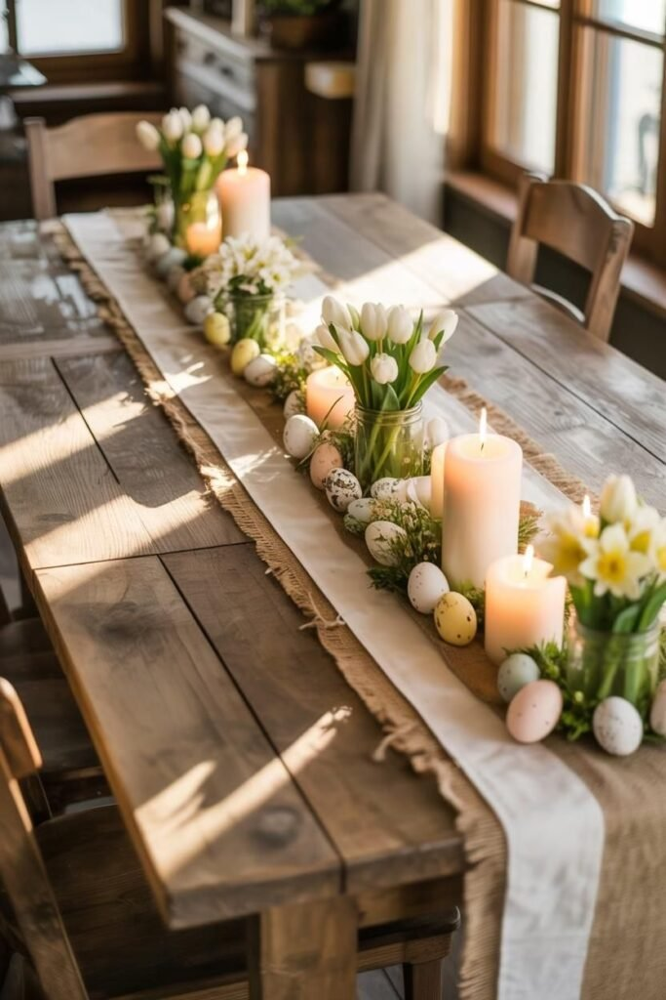
15 Easter Table Settings
1. Glam Crystal and Candlelight
For full elegance, leaning into sparkle and crystal is a strong place to start.
Lighting matters more here than in any other setting, dimming the overhead lights and letting candles do the work transforms even simple tableware into something that photographs beautifully.
It is the setting built for a formal Easter dinner, the kind where guests reach for their phones the second they sit down.
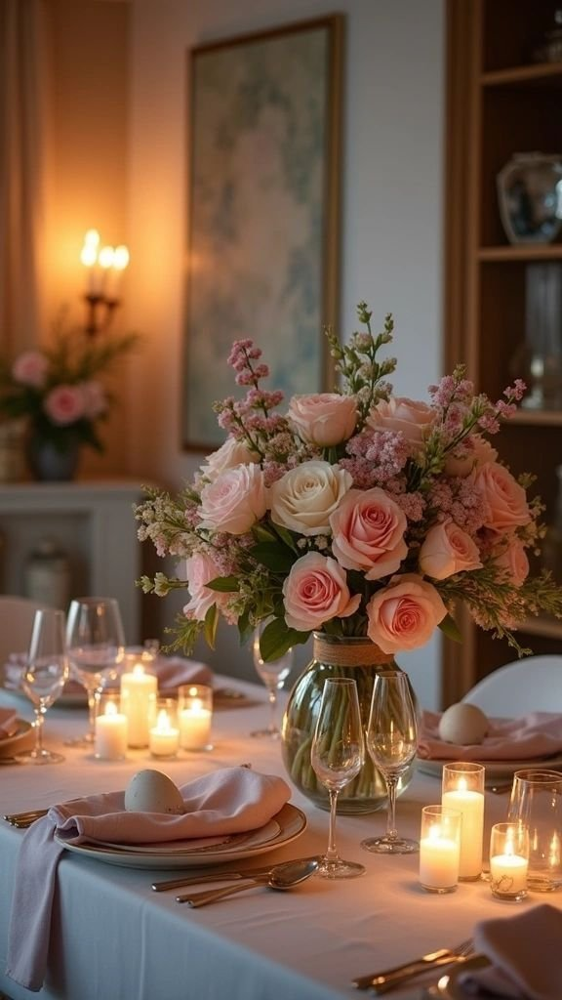
OJA Crystal Hand Blown Red Wine Glasses, Set of 4, 23 oz
Shop on Amazon2. Boho-Inspired
For anyone who loves layered textures and a relaxed vibe, this setting feels effortless without reading as unplanned.
Earthy tones like terracotta, beige, and muted pink keep the look soft and cohesive, too many competing colors would undercut exactly what makes it work.
It is an especially strong fit for a daytime brunch gathering, where it reads as warm and welcoming rather than overly formal.
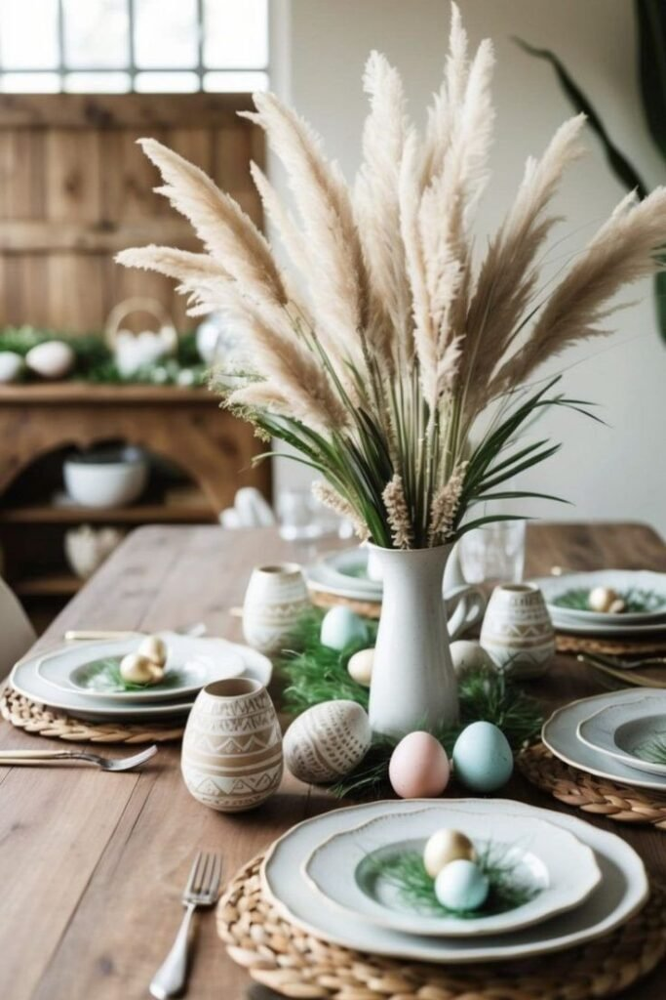

3. Bold Color Pop
Not everyone wants soft tones, and a table built around one confident, saturated color proves bold can work just as well as muted.
A vibrant coral, deep berry, or saturated yellow anchored by neutral surroundings keeps the boldness from tipping into overwhelming.
A bold table works because it shows real confidence, the goal is personality added carefully, not color thrown on without a plan.
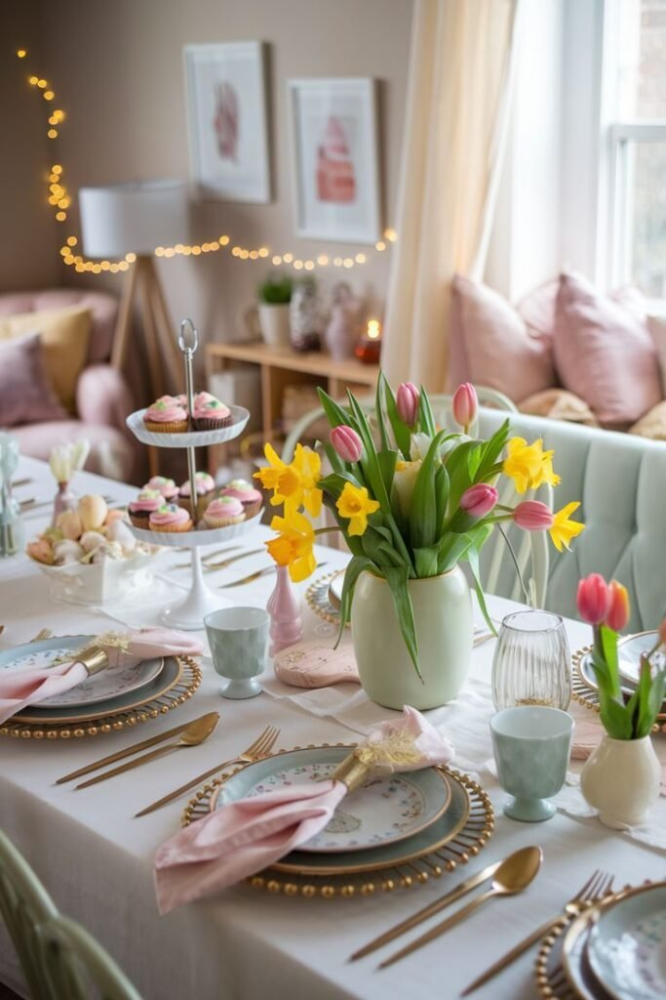
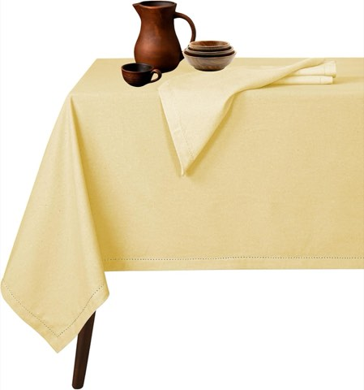
Native Fab 100% Cotton Tablecloth, 52 x 70 Inch, Wrinkle-Free, Washable
Shop on Amazon4. Blue and White Spring
This combination feels timeless in a way few other palettes manage, closer to classic porcelain and coastal elegance than a typical Easter table.
It leans spring without relying on any of the obvious Easter symbols, which makes it a strong option for anyone who wants the season without the theme.
Blue and white reads as crisp and classic in almost any setting, holiday or otherwise.
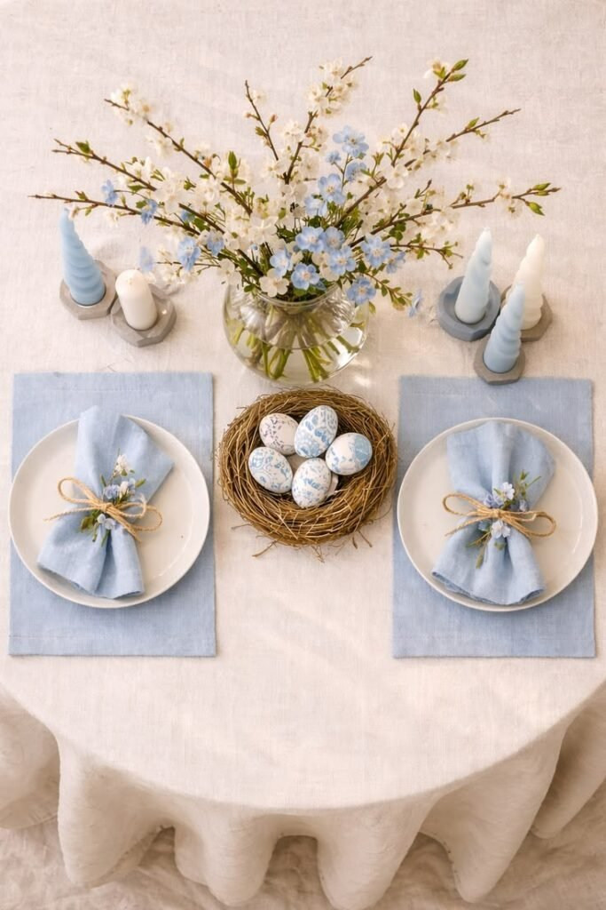
5. Kid-Friendly, Still Stylish
Kids love Easter, and they love chocolate even more, so a table designed with them specifically in mind pays off for everyone.
A tiny surprise at each kid's place setting keeps them engaged a little longer, which buys the adults a few extra minutes of actual coffee.
Sticking to one or two bright colors keeps it playful without letting too many bold shades tip into visual chaos.
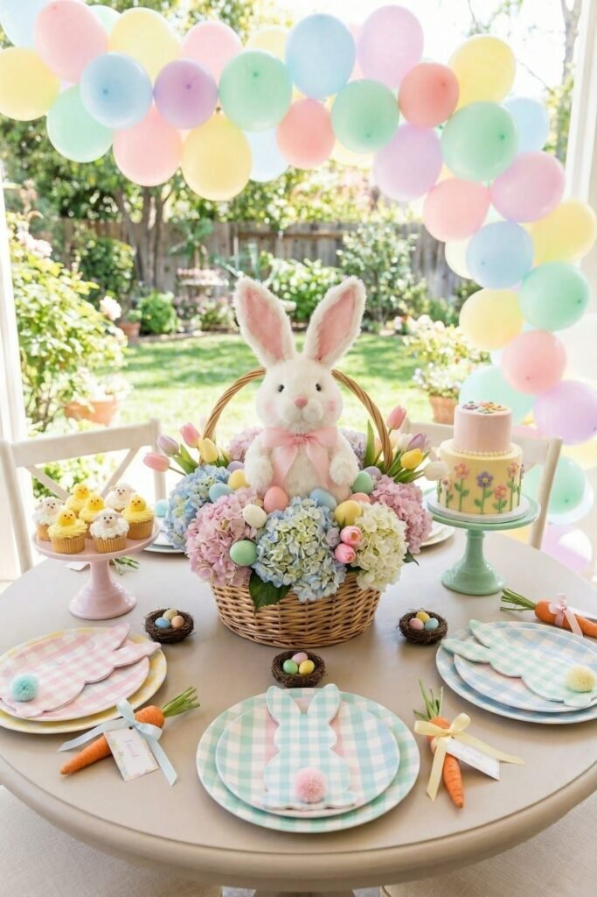
6. Outdoor Garden
When the weather cooperates, taking Easter dinner outside instantly adds a magical quality no indoor table quite replicates.
Natural sunlight does a surprising amount of the decorating work on its own, and the movement of the outdoors adds softness no styled interior can fake.
Weighted napkins or simple clips handle any uninvited wind, practicality still matters even when the setting looks effortless.
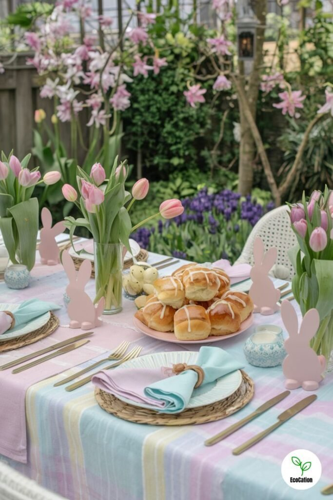
Ponure Heavy Duty Tablecloth Clips, 12 Pack, Stainless Steel
Shop on Amazon7. Bunny-Themed, But Grown-Up
Bunny decor can go one of two ways, adorable or aggressively childish, with very little middle ground.
The trick is choosing subtle accents instead of a full cartoon overload.
A single sculptural bunny figure, a subtle print, or one well-chosen accent does the job far better than a table covered in them.
Keeping everything else around it simple is what lets the bunny detail whisper instead of shout, restraint is what makes themed decor read as elegant rather than kitschy.
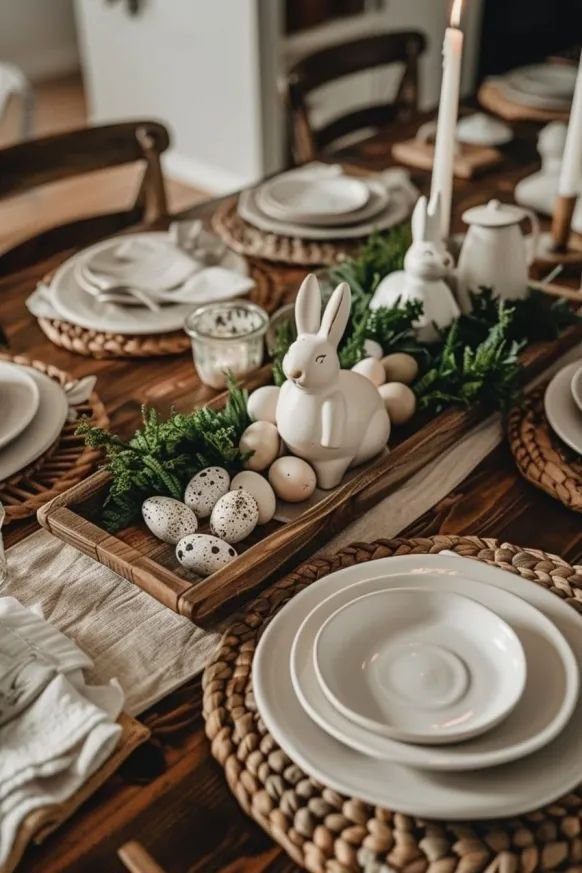
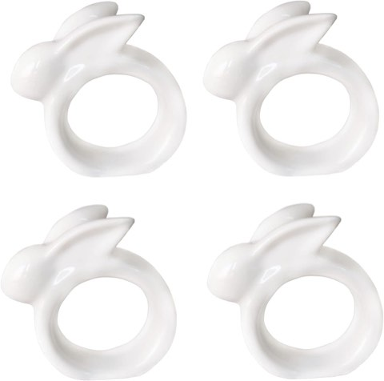
Porcelain Rabbit Napkin Rings, Easter Bunny Napkin Ring Holders, Set of 4
Shop on Amazon8. Vintage-Inspired
This is the setting for anyone chasing nostalgia over polish.
Vintage pieces tell stories in a way new matching sets never quite manage.
Borrowed or inherited china, old teacups, and mismatched antique plates all add a sentimental, layered quality that guests consistently notice first.
Mixing old pieces with modern glassware keeps the whole table feeling curated rather than simply dated.
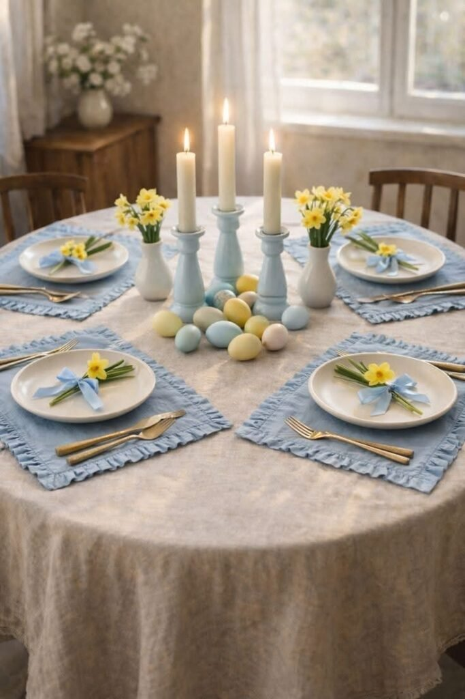
9. Minimalist Neutral
Sometimes less genuinely wins.
For anyone drawn to calm, neutral interiors, this setting feels effortless rather than empty.
It reads as modern without needing to shout "Easter" at every turn, which makes it a strong option for anyone who finds bright holiday colors overwhelming.
Minimal design highlights quality over quantity, the fewer the elements, the more each one actually gets noticed.
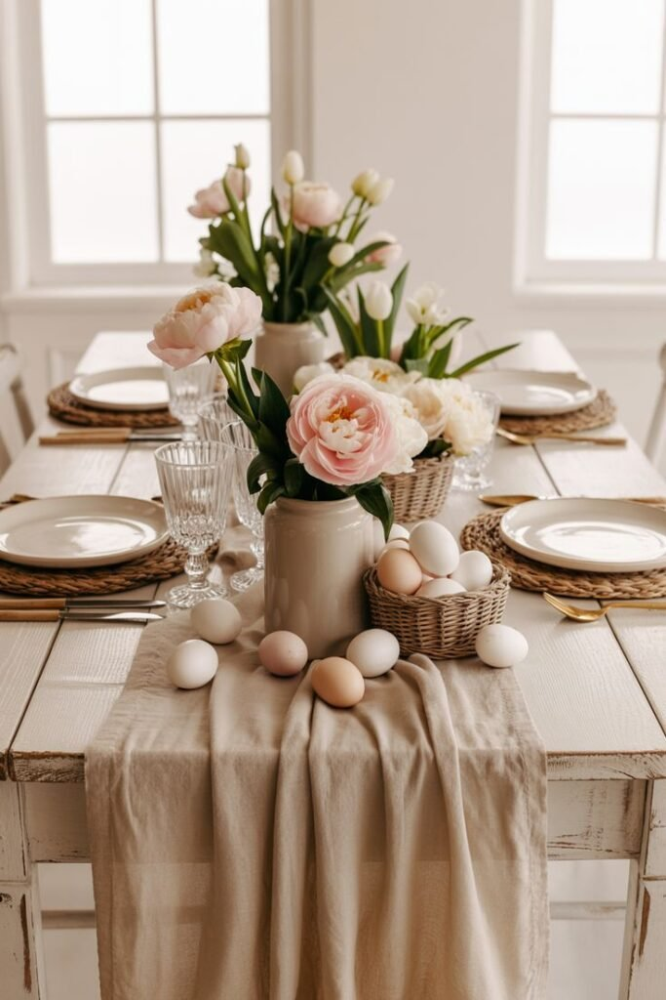
10. Floral Garden-Inspired
It is hard to talk about a stunning Easter table without florals finding their way in somewhere.
Letting a few different flower varieties and patterns play together within one tight color family keeps the look from sliding into chaos.
Fresh flowers do double duty here, genuinely beautiful on their own, and enough to set the entire table's mood without any other effort.
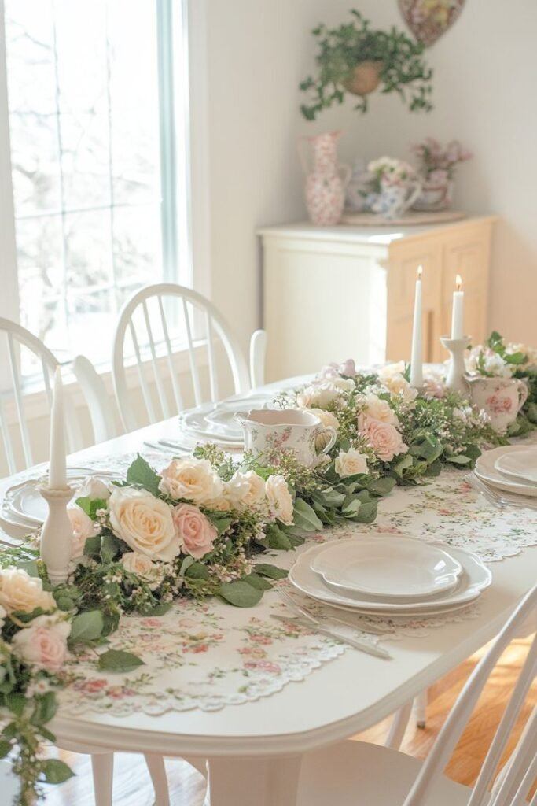
11. All-White, Fully Textured
Going fully white is dramatic and serene at once, but only if texture does the heavy lifting underneath it.
Mixing materials, ceramic, linen, glass, wood, is what keeps an all-white table from reading as flat.
Without that mix, white falls strangely short.
This look suits an evening dinner especially well.
Candlelight transforms it completely once the sun goes down.
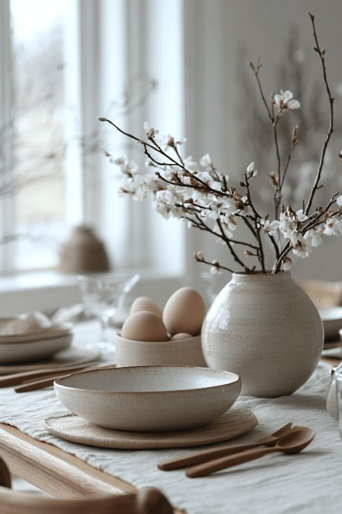
12. Elegant Gold and White
For something more elevated, going monochrome with metallic accents delivers a formal feel without tipping into stiff.
Gold works best kept minimal here, a few curated touches read as intentional and luxe, while too much metallic starts to feel flashy.
This pairing works especially well for an evening Easter dinner, where it pairs naturally with candlelight.
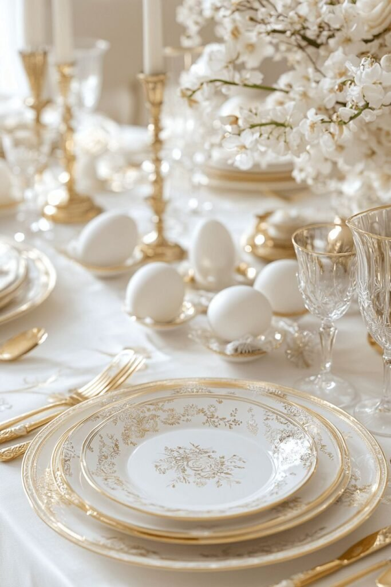
13. Rustic Farmhouse
For anyone drawn to warmth and charm over polish, this is the setting that delivers it most reliably.
Natural wood, neutral linens, and soft greenery give the table a relaxed, welcoming feel that invites people to actually linger.
Rustic settings have a way of encouraging conversation to stretch on longer than planned, which is really the whole point of a holiday table.
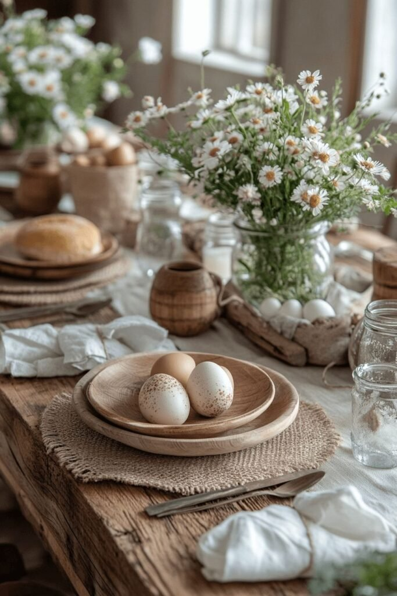

14. Modern Black and Blush
Easter does not have to stay pastel and sweet.
Pairing soft blush pink with matte black accents creates a contrast that reads as chic and genuinely unexpected.
Keeping the floral arrangements light and airy stops the black from overpowering the overall mood of the table.
Contrast creates drama, and a few small details, black candle holders, trim on the napkins, are enough to elevate the entire setting.
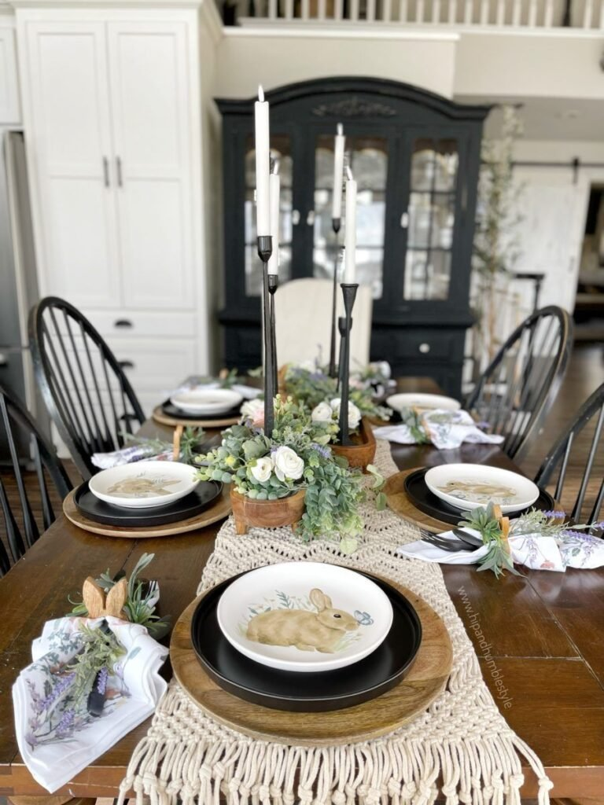
15. Classic Pastel
This is the setting everyone pictures first when Easter comes up, soft pink, baby blue, gentle lavender, and it never actually goes out of style.
Keeping the palette soft but intentional is what separates it from looking saccharine.
Blush pink paired with muted sage reads as grown-up rather than sugary.
Pastels naturally reflect spring energy, and layered correctly, they create a mood that is calm without losing any sense of celebration.
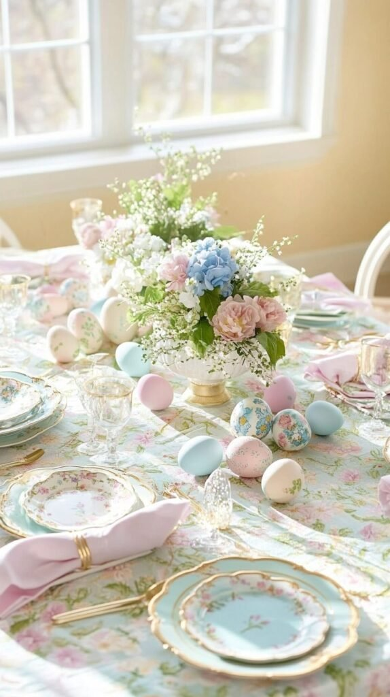
Final Thoughts
None of these settings work because of trends, expensive decor, or copying someone else's exact table down to the napkin fold.
They work because they combine real color harmony, genuine texture, and a focal point that actually anchors the design.
Pick whichever one fits the occasion, adapt it to the space actually available, and commit to it fully.
The table does not need a massive budget, it needs a plan.
Once that plan is in place, the rest of the styling tends to fall together faster than expected.